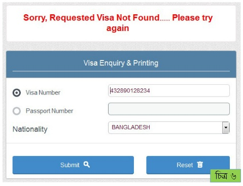
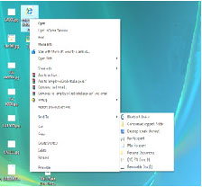

| রাষ্ট্রীয় নাম | : | স্টেট অফ কাতার |
| স্বাধীনতা | : | ১৮ ডিসেম্বর, ১৯৭১ |
| সরকার | : | রাজতন্ত্র |
| জনসংখ্যা | : | ১৮,৫৩,৫৬৩ |
| মুদ্রা | : | রিয়াল (১রিয়াল=২৩টাকা প্রায়) |
| আয়তন | : | ১১,৫৯০ বর্গ কিলোমিটার |
| ভাষা | : | আরবী |
| ধর্ম | : | ইসলাম (৯৬%) |
| প্রধান খাদ্য | : | ভাত, রুটি, ডাল, বিরানী, খেজুর |
| ফোন কোড | : | ৯৭১ |
| প্রধান শিল্প | : | পেট্রোলিয়াম, সার, স্টিল |

দোহা নগরী

কাতারের ভিসাব্রাউজারের এ্যাড্রেস লেখার ঘরে http://www.moi.gov.qa/ site/english/ লিখে এন্টার চেপে ওয়েবসাইটে প্রবেশ করুন। যে পেজটি ওপেন হবে তার Inqueries আইটেমে ক্লিক করুন (চিত্র ১)।
Inqueries ক্লিক করলে নিচের উইন্ডোটি আসবে যেখানে Visa Enquery & Printing ক্লিক করতে হবে (চিত্র-২)
Visa Enquery & Printing ক্লিক করলে নিচের উইন্ডোটি আসবে (চিত্র ৩)।
Visa Enquiry & Printing আইটেমে ক্লিক করলে Visa Number বা Passport Number I Nationality লেখার তিনটি বক্স আসবে।

Visa Number অথবা Passport Number লিখে Nationality লেখার বক্সের ডানে তিন কোনা ছোট কালো চিহ্নের উপর ক্লিক করলে দেশের নামের ড্রপ ডাউন মেনু আসবে (চিত্র ৪)। ড্রপ ডাউন মেনু থেকে Bangladesh সিলেক্ট করতে হবে (চিত্র ৫)।

Visa Number অথবা Passport Number এর ঘর পূরণ করে Submit লেখা বাটনের উপর ক্লিক করতে হবে (চিত্র ৬)। তাহলেই জানতে পারবেন ভিসা ঠিক আছে কিনা। এই অংশটি প্রিন্ট করা যেতে পারে। প্রিন্ট করার জন্য ব্রাউজারের File মেনুতে (লাল বৃত্ত) ক্লিক করলে একটি ড্রপ ডাউন মেনু আসবে (চিত্র ৭)।
এখানে Print ক্লিক করলে (চিত্র ৭) পরের উইন্ডো আসবে (চিত্র ৮)।
এখানে OK বাটনে ক্লিক করে প্রিন্ট করতে পারবেন (চিত্র ৮)। পেজটি সেভ করে পরেও প্রিন্ট নেয়া যেতে পারে। পেজটি সেভ/ সংরক্ষণ করার জন্য ব্রাউজারের File মেনুতে (লাল বৃত্তে ঘেরা) ক্লিক করে Save Page As এ ক্লিক করতে হবে (চিত্র ৯)।
Save Page As এ ক্লিক করলে নিচের মতো একটি উইন্ডো আসবে। এখানে তিনটি বিষয় খেয়াল করতে হবে (চিত্র ১০)।
সেভ করা ফাইলটি পেন ড্রাইভে Copy করে অন্যত্র Print করতে পারেন। প্রথমে পেন ড্রাইভটি কম্পিউটারের পোর্টে লাগিয়ে নিন।
ফাইলটির উপর মাউসের ডান বাটন ক্লিক করলে যে ড্রপ ডাউন মেনু আসবে সেখানে সেন্ড টু এর উপর মাউস পয়েন্টার নিলে আর একটি ড্রপ ডাউন মেনু আসবে (চিত্র ১২)।
এখানে রিমুভেবল ড্রাইভ ক্লিক করলে (চিত্র ১২) ফাইলটি পেন ড্রাইভে কপি হয়ে যাবে (চিত্র ১৩)।